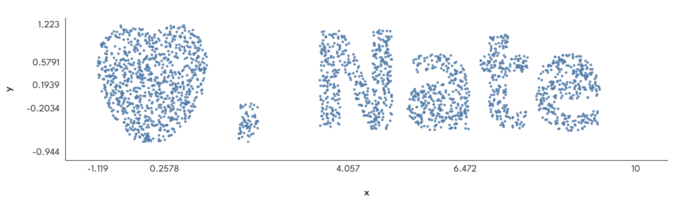

About Scatterize
You — yes, you — should look at your data.
Analyzing data is a lot of work. There’s checking, cleaning, preprocessing, modeling… the list goes on. And at the end of the day, sometimes you want to run your models, write up your findings, and get on with things.
Why, you ask, should you bother looking at the data? In a nutshell: Descriptive statistics can only tell you so much. You have probably heard of Anscombe’s Quartet; even better is the Datasaurus Dozen — a baker’s dozen of (x, y) pairs that share a bunch of descriptive stats:


So once you’re convinced that you should do this, you need to actually make it happen. And as nice as ggplot2 is, it’s kind of a pain to make all the plots you definitely want to look at. And making plots for the things you’re kind of interested in? I mean… you can do it. People do.
But maybe… it could be easier?
What Scatterize Does
Scatterize is a simple tool that will show a bivariate view of “table-like” data. A scatterplot. You can use it on small datasets. You can use it on big datasets. You can run ordinary or robust parametric models, as well as nonparametric models. You can add and remove covariates to see if age or SES are driving your relationship. Want to see how things look with a point censored? Click it and find out.
It will always show you how the variables you have selected relate to each other after regressing out any covariates.
If you’re looking at data that’s publicly hosted with the right permissions (a CSV file on the web, or a Google Sheet), you can send a link for your plot to someone else, and they’ll see what you see.
Everything in Scatterize happens on your computer, in your web browser, without sending any data to a server. If you or your IT folk don’t trust that, you can download the latest release, unzip it, and open index.html in a browser on your computer; it should work fine from there.
OLS? Robust? Spearman? Theil-Sen? What model should I use?
tl;dr: Normally, use robust regression. Scatterize chooses ordinary least squares initially because I am a coward.
My unpopular opinion as a non-statistician: One of the biggest reasons OLS regression has been so popular, for so long, is that the math is easy, and that it’s relatively easy to prove things about it. It behaves well in a variety of circumstances. It is, unfortunately, quite susceptible to outliers — you’re minimizing squared error, so points far from your line have very large effects on it.
So: If you want to do normal parametric things with p-values and covariates and not think too hard about outliers, use robust regression. This will automatically downweight outliers. (We’re using M-estimation with the Tukey loss function. If you want to choose these details, you want different software.)
If you want to see if a single pair of variables has a relationship, despite the effects of outliers, use Spearman’s ρ.
If you want a very good “median” estimate of the slope between two variables while being extremely robust to outliers, use Theil-Sen.
If people are grousing about you using robust regression, or your n is very small, use OLS regression.
What’s in this stats code? Should I trust it?
Of course you shouldn’t. Before you go and publish numbers you see here, run your model in R or SPSS or Matlab or statsmodels. Stats code in those packages has been tested a million times more thoroughly than this will ever be.
For reference: The stats code in this was generated primarily using Claude models developed by Anthropic. To build it, I used standard and synthetic data, ran models against it in R using standard packages, and made agreement with those results the target for success.
Ordinary least squares and the nonparametric models should match R’s results extremely closely. Robust regression should be very close. Iterative models leave a lot more room for differences.
For full disclosure: A good deal of the other code in this project was generated by Claude models, as well.
What about p-hacking?
Don’t.
There are uncountably many ways to lie to yourself, or other people, about your data. You can make a matrix of p-values comparing every variable to every other variable, and repeat that with covariates. (Sometimes you should actually do just that.) There are as many ways to justify excluding a data point as there are points in your data set. You can run analyses until you see what you want, and justify every choice you made to get there.
You can also not do those things.
If you don’t want to p-hack, don’t p-hack. Pre-register your hypotheses. Do it in public, do it in private, whatever. Write down, ahead of time, what you expect to find in your data, and why you think you’ll find it. Let that record help you keep yourself honest.
Maybe you find what you’re hoping for; maybe you don’t. But looking at your data, in detail, will teach you a lot about it. It’ll help you learn to trust, or not, the results from your stats models. It’ll also help you decide what you want to research in the future.
About the author, the code, and the process
Scatterize was written by me, Nate Vack. I have two main jobs: One at the Center for Healthy Minds at the University of Wisconsin-Madison, and the other as the co-founder of a product, mainly for libraries, called Gimlet. I also try to be a good dad and at least a passably decent husband.
If you have feedback here, feel free to use the Feedback link at the bottom of the page if you're comfortable in Github. If you'd rather send me an email, I'm at njvack@freshforever.net.
This project was part of neither job, although it was inspired and informed by both. It was largely a hobby project to resurrect an old version of Scatterize that required a server for data handling and statistics, and a way to learn to use coding agents — primarily Claude Code — while doing that.
You are free to use this code, and the plots and statistics produced by it, for any purpose you want. I will never write this up as a paper; if you want to cite it for some reason, let me know and I’ll help gin up a citation of some kind.
I can say without a doubt: This project would not have been practical without coding agents and their associated models. This was still a tremendous amount of work, and honestly I never would have had the energy to undertake it without a computer doing most of the typing.
On coding agents: It’s still very difficult for me to predict how they will do on a given task. Some things I thought were ridiculous stretch goals — for example, re-implementing the entire plotting engine in WebGL for speed on large datasets — were almost hilariously trivial. Just… a few minutes of cranking and it was basically done. Other things that seemed like they should be easy were a slog. I remain haunted by off-plot censor diamonds.
As of mid-July 2026, I am better at large-scale design and product decisions. Well, I think so, at least.
I do not particularly like LLM writing style. The words on this page were written by me, using a keyboard, just like in the old days.
Special thanks
Special thanks go out to Drew Fox, who encouraged me to write this silly thing in the first place, and to Alex Shackman, whose feedback has made it much better over the years.
And, of course, thank you for reading this far and trying Scatterize. I've been writing software for about thirty years now, and this is the product I'm happiest with so far. I hope it's useful to you!
